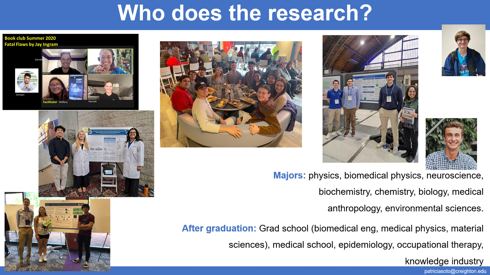

{% include base_path %}

{% for post in site.group %}
  {% include archive-single.html %}
{% endfor %}

Engaging in research with undergraduates is deeply fulfilling:
<ul>
  <li>Catalyzes the academic and scientific growth of a young adult</li>
  <li>Offers me the opportunity to see the world of scientific research through the eyes of the emerging expert</li>
  <li>Brings the vitality of the youth and a science workforce that renews itself</li>
  <li>Refreshes perspectives on science, undergraduate college experience, and life</li>
  <li>Enriches processes and growth through mutual challenge and collaboration</li>
</ul>

 
<!  >
